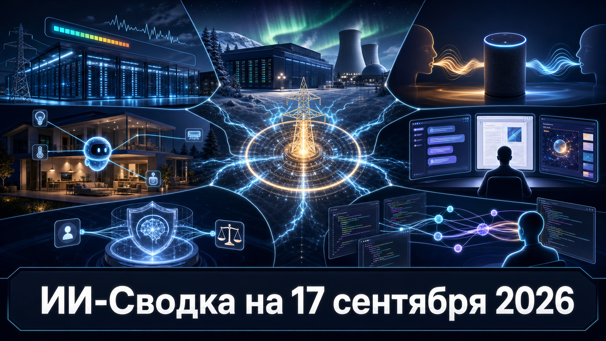

Повестка дня показывает, что следующий предел масштабирования ИИ проходит не только через модели и GPU, но и через энергосистему. Google, NVIDIA и партнёры продвигают управляемое энергопотребление дата-центров, а Google одновременно закрепляет крупный европейский проект с долгосрочным источником атомной энергии.
На продуктовом уровне ассистенты получают больше внешних действий и более устойчивую память: Amazon локализует Alexa+ для Индии, Google открывает агентам доступ к умному дому, Anthropic объединяет режимы Claude, а Grok Build сохраняет контекст между сессиями.
Amazon открыла ранний доступ к генеративному ассистенту Alexa+ в Индии. Сервис работает на хинди и английском, умеет переключаться между ними в одной фразе и рассчитан на многошаговые поручения.
Как сообщает TechCrunch, для запуска добавлены интеграции с местными сервисами, включая Swiggy, District, MakeMyTrip, TripAdvisor, EazyDiner и JioSaavn. Это ранний доступ, однако локализация превращает Alexa+ из англоязычного помощника в продукт, ориентированный на один из крупнейших потребительских рынков ИИ.
Google начала предоставлять подписчикам Google Home Premium Advanced в США ранний доступ к MCP-серверу Google Home. Через него совместимые агенты ИИ смогут подключаться к устройствам и истории событий умного дома, управлять техникой, просматривать сводки камер и создавать собственные панели управления.
По данным TechCrunch, на старте поддерживаются агенты с MCP, включая Claude, ChatGPT и Google Antigravity. Rollout ограничен платным тарифом и США, но это важное расширение агентных интеграций: внешние модели получают путь к действиям за пределами браузера и офисных систем.
Anthropic объединила Claude Chat, Cowork и Artifacts в единое рабочее окно. Пользователю больше не требуется вручную переключаться между отдельными режимами: Claude должен сам направлять запрос к подходящей возможности.
Как пишет TechCrunch, в общий интерфейс также входят инструменты создания и редактирования документов и презентаций; сначала обновление разворачивается для тарифов Pro и Max. Это не новый релиз модели, а продуктовый шаг к единой агентной среде, где чат, выполнение задач и создание материалов становятся одной последовательностью работы.
NVIDIA сообщила о запуске AI Energy Management Alliance вместе с Emerald AI, Google и другими участниками энергетической и ИИ-экосистемы. Альянс намерен ускорять подключение дата-центров, способных гибко менять энергопотребление в зависимости от состояния сети.
Согласно сообщению NVIDIA, задача инициативы — укреплять надёжность энергосистемы и сдерживать рост стоимости электроэнергии при расширении вычислительных мощностей. Пока это коалиция и набор общих целей, а не обязательное регулирование, но сам состав участников показывает, что управление спросом становится частью стратегии ИИ-инфраструктуры.
OpenAI выпустила документ Our framework for reporting model misalignment, посвящённый подходу компании к сообщениям о несоответствии поведения моделей заданным целям и ограничениям. Публикация формализует эту тему как отдельное направление публичной отчётности.
Значение документа — в переходе от разовых комментариев о необычном поведении моделей к заявленной рамке раскрытия. Сама публикация не заменяет независимые проверки и не доказывает эффективность процедур на практике, но создаёт ориентир для рынка, где требования к прозрачности инцидентов становятся всё важнее.
Google объявила инвестиционный проект в Финляндии объёмом $15 млрд: он включает строительство дата-центров в Kajaani, Muhos и Vaala, а также расширение существующей площадки в Hamina. Компания также договорилась с Fortum о долгосрочном доступе к мощности АЭС Loviisa.
Как сообщает TechRadar, проект может получить до 500 МВт — примерно половину выработки станции. Планы Google подчёркивают, что конкурентоспособность облачной и ИИ-инфраструктуры всё сильнее определяется заранее обеспеченной электроэнергией, а не только поставками вычислительного оборудования.
SpaceXAI объявила, что Grok Build получил память между сессиями. Агент сохраняет устойчивые сведения о проекте — соглашения, решения и факты — в Markdown-файлах, а затем использует релевантные заметки при работе в новых сессиях.
В официальном сообщении SpaceXAI указаны команды /memory для просмотра файлов памяти и /dream для периодической организации наблюдений по темам. Компания подчёркивает, что текущие инструкции в диалоге имеют приоритет над сохранённым контекстом; независимой оценки качества механизма пока нет. Тем не менее функция отвечает на одну из ключевых проблем coding-агентов — потерю проектного контекста после завершения сессии.